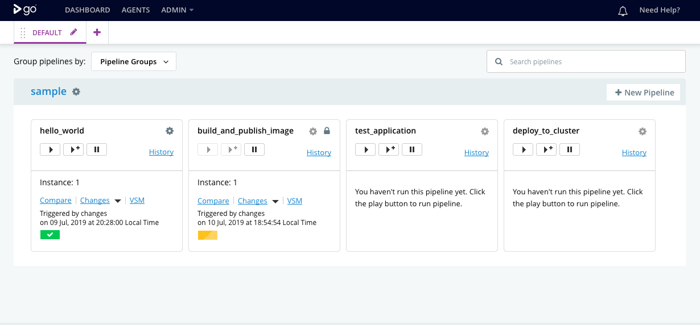

Getting Started with GoCD on Kubernetes
Step 3: Import sample pipeline to build and deploy a sample application
In this section, we’ll import a set of GoCD pipelines that build and deploy a sample application with a Docker based build workflow.
This section uses GoCDs pipelines as code capability to import sample pipeline definitions from an external Git repository.
Prerequisites
The sample pipelines build a sample application as a Docker image artifact and publish it to Dockerhub. To do this, make sure you have a Docker Hub account.
GoCD’s pipelines as code configurations allow for the scripting of pipeline definitions. These do not include global objects like artifact stores. Global objects need to be setup using the GoCD user interface or the API. This sample requires an artifact store configured so pipelines can publish and fetch Docker image artifacts to it.
You can configure a new DockerHub artifact store with the
Admin -> Artifact Storesmenu.You can now configure the artifact store with your DockerHub credentials.

To setup Dockerhub credentials, select the registry type:
Others (Dockerhub, GCR, private)The Docker registry URL for Dockerhub is
https://index.docker.io/v1Enter your Dockerhub user credentials.
Setup secrets
For deployment pipelines that need access to the Kubernetes API for target deployment Kubernetes clusters, an API token must be provided and made available to deployment scripts. Deployment scripts also need other secrets such as Dockerhub credentials. We setup these secrets in Kubernetes and make them available to the GoCD agents in the elastic agent’s pod yaml configuration.
Kubernetes API Tokens
To allow a deployment script to be able to communicate with the target Kubernetes cluster, you must create a service account for deployments. The API token for this service account can then be stored in a Kubernetes secret.
Refer the Kubernetes RBAC guide for instructions on creating service accounts and assigning them to roles.
You can create a secret with these credentials with the following Kubernetes configuration:
cat <<EOF >./secrets-for-gocd.yaml apiVersion: v1 kind: Secret metadata: name: secrets-for-gocd type: Opaque data: K8S_API_TOKEN: <Base64 encoded Kubernetes API token> DOCKERHUB_USERNAME: <Base64 encoded Dockerhub user name> DOCKERHUB_ORG: <Base64 encoded Dockerhub organization> EOFEncoding note: The serialized JSON and YAML values of secret data are encoded as base64 strings. Newlines are not valid within these strings and must be omitted. The following pipeline will strip newlines before base64 encoding strings.
echo -n "string" | base64Apply the secrets-for-gocd.yaml file to create a secret with these credentials
kubectl apply -f secrets-for-gocd.yaml -n gocdConfigure the elastic profile.
The sample pipelines are configured to use GoCD Kubernetes elastic agents. Elastic agents are build agents that are provisioned on-demand for a job and terminated thereafter.
Elastic agents use elastic profiles to provision these on-demand agents. A Kubernetes elastic profile includes information about the container image for the GoCD agents, and the pod configuration yaml.
The GoCD Helm chart sets up an elastic profile after installation. To view this elastic profile configuration, navigate to
Admin > Elastic Profiles.
The GoCD elastic agents need to be configured with secrets such as a Kubernetes API token to allow it to be able to perform deployments of applications to the cluster.
We configure the secrets created in the previous step in the configuration of the elastic profile mentioned earlier. Replace the pod yaml with one below.
apiVersion: v1 kind: Pod metadata: name: pod-name-prefix-{{ POD_POSTFIX }} labels: app: web spec: containers: - name: gocd-agent-container-{{ CONTAINER_POSTFIX }} image: gocddemo/gocd-agent-dind:webinar env: - name: KUBE_TOKEN valueFrom: secretKeyRef: name: secrets-for-gocd key: K8S_API_TOKEN - name: DOCKERHUB_USERNAME valueFrom: secretKeyRef: name: secrets-for-gocd key: DOCKERHUB_USERNAME - name: DOCKERHUB_ORG valueFrom: secretKeyRef: name: secrets-for-gocd key: DOCKERHUB_ORG - name: NAMESPACE valueFrom: fieldRef: fieldPath: metadata.namespace securityContext: privileged: true
Setup external pipeline configuration repository
GoCD pipelines can be defined in code in either YAML or JSON format. These pipeline definitions can be stored in a source code repository, either in your application’s repository or a separate repository.
The GoCD sample pipelines build and publish an image of a sample nodejs application called ‘Bulletin Board’. These pipeline configurations are available in the repository:
https://github.com/gocd-demo/sample-k8s-workflow
You can add a new configuration repository with the Admin -> Config Repositories menu.
You can now configure the location of the repository(ies) to pick up pipeline definitions.
Note: The PluginID dropdown allows you to select either the JSON or YAML configuration plugin, based on the format of your pipeline configuration.

Imported sample pipelines
Once imported, the dashboard page should display the sample pipelines.
Now that the pipelines have been imported, we can run them and verify that our application is built and its Docker image is published to DockerHub.

To run the build_and_publish_image pipeline, unpause the pipelines in the GoCD dashboard.
 Suggest edits to this page
Suggest edits to this page